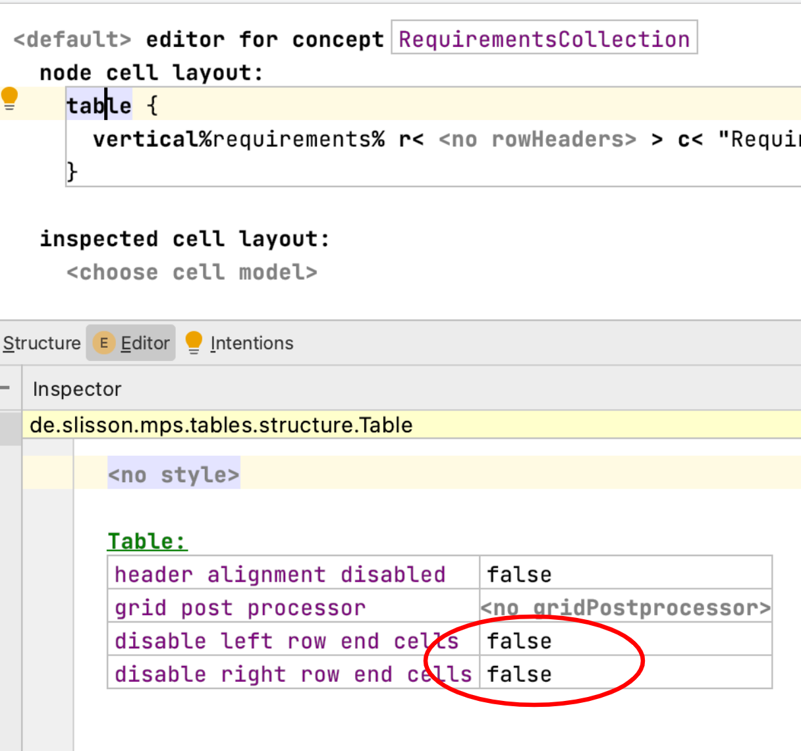

Editor¶
Richtext¶
Language: slisson.richtext
The ordering of text and IWords can't be arbitrary
A checking rule enforces that the text is normalized: There has to be at least one child, it must start with a Word and a Word must always be betweeen two embedded nodes and there are noo two consecutive Words.
Diagram¶
Language: de.itemis.mps.editor.diagram
I encountered a bug.
Check the meta Issue on Github.
How do I use this language?
Have a look at the samples of this language in mps-extensions. There is also an external tutorial series.
What is edge ID in the diagrams used for?
It’s used in the map that contains the layout data. It can be any unique string. LayoutMapEntry.key is the property where this string is used (source).
Conditional Editor¶
Language: de.slisson.mps.conditionalEditor
There are generation errors.
The condition of the conditional editor is not optional, it has to be set.
Tables¶
Language: de.slisson.mps.tables
How to get rid of the small little extra grid lines on the outside of the table rows? (original question)
Change these properties to true. 
Cell Layout¶
Language: de.itemis.mps.editor.celllayout
What does this language do?
In the MPS layout algorithms the children decide about their width and height and the parent cell can only arrange the already layouted children.
In the algorithms from the celllayout language are similar to the swing layouters where the child is asked for its min/max/preferred size,
but the parent decides about the size of the child and the child then has to fit itself into these bounds.
This is used in tables and diagram, but also for the styles defined in the de.itemis.mps.celllayout language (source).
Grammar Cells¶
Language: de.itemis.mps.grammarcells
Grammar cells force me to create a dummy component. Is this really necessary?
Yes it is, otherwise the generator doesn't get used source.
What combination of cells are not supported?
The following combinations are not allowed:
- optional and constant
- optional and reference
How can enter enumerations easier?
Specific Languages Blog — Entering enumerations easier with grammar cells
Querylist¶
Language: com.mbeddr.mpsutil.editor.querylist
How do I fold collections returned by a querylist?
Surround the querylist with a vertical collection and and set the cell layout of the querylist (not its content) to vertical.